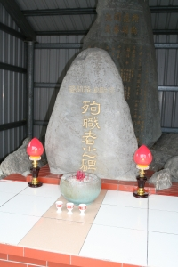

|
指定別：三級
公告類別：碑
位置：吉安鄉吉安段478-19地號
公告日期：86.04.01
「橫斷道路開鑿紀念碑」座高約160公分，寬約74公分的玄武岩碑石；「殉職者之碑」高約100公分，寬約66公分，片麻岩材質。橫斷道路為跨越中央山脈之險奇路線，山勢險峻，工程艱鉅，死傷嚴重。施工期間殉職人員無法運下山安葬，往往就地掩埋，直到全線路基打通，才於大正七年一月為殉職者設碑紀念，供後人憑弔。
本記念碑，是總督府能高橫斷道路開鑿作業隊所立，以紀念大正6年9月到7年1月（1917-1918年）間，循能高越嶺路徑開闢橫斷道路東段（初音至奇萊山）完工時所置，包括「橫斷道路開鑿記念碑」與「殉職者之碑」二部分。
對東部控制穩定後的大正6年，總督府開始興建能高橫斷道路，總長約90公里，東段長約44公里。東段道路施工期間，共動用警備員8,500人、職工14,000人、人夫36,000人，耗資42,000元。由於形勢異常險峻，工程艱鉅，死傷頗多，為紀念這段工程，並表示對殉職者的紀念，於大正7年初道路完工之時，在東段出口處闢園設置「橫斷道路開鑿記念碑」和「殉職者之碑」。 |
 |